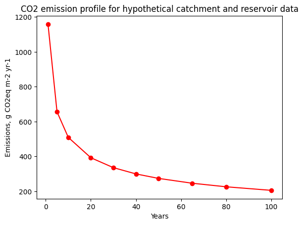
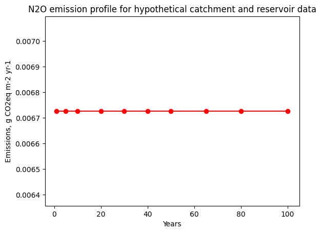
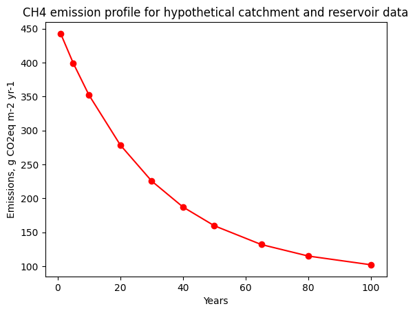

A Step-By-Step Guide to GHG Calculations with RE-Emission
This notebook demonstrates how to:
Manually construct input data structures for a hypotethical reservoir
Instantiate Catchment and Reservoir objects
Calculate \(CO_2\), \(CH_4\) and \(N_2O\) emission factors
Calculate \(CO_2\), \(CH_4\) and \(N_2O\) emission profile
< Contents | Automatic Calculation of GHG Emissions >

Import required libraries and RE-Emission classes
[1]:
import sys
import matplotlib.pyplot as plt
from rich import print as rprint
try:
import reemission
except ImportError:
%pip install git+https://github.com/tomjanus/reemission.git --quiet
# Import from the temperature module
from reemission.temperature import MonthlyTemperature
# Import from the emissions module
from reemission.emissions import CarbonDioxideEmission, NitrousOxideEmission, MethaneEmission
# Import from the constants module
from reemission.constants import Climate, SoilType, Biome, TreatmentFactor, LanduseIntensity
# Import from the catchment module
from reemission.catchment import Catchment
# Import from the reservoir module
from reemission.reservoir import Reservoir
# Import from the biogenic module
from reemission.biogenic import BiogenicFactors
1. Prepare Input Data
[2]:
# Define a typical monthly temperature profile in the location where reservoir is situated
mt = MonthlyTemperature([10.56,11.99,15.46,18.29,20.79,22.09,22.46,22.66,21.93,19.33,15.03,11.66])
# Reservoir coordinates (lat, long)
coordinates = [22.6, 94.7]
# Define categorical properties of the catchment.
# These properties define the biome, climate, type of soil, degree of wastewater treatment in the area
# and agricultural land use intensity
biogenic_factors = BiogenicFactors(
biome = Biome.TROPICALMOISTBROADLEAF,
climate = Climate.TROPICAL,
soil_type=SoilType.MINERAL,
treatment_factor = TreatmentFactor.NONE,
landuse_intensity = LanduseIntensity.LOW)
# Define area fractions allocated to different available landuses
# The supported landuses are:
# 'bare', 'snow_ice', 'urban', 'water', 'wetlands', 'crops', 'shrubs', 'forest'
catchment_area_fractions = [
0.0, 0.0, 0.0, 0.0, 0.0, 0.01092, 0.11996, 0.867257, 0.0]
reservoir_area_fractions = [
0.0, 0.0, 0.0, 0.0, 0.0, 0.45, 0.15, 0.4, 0.0,
0.0, 0.0, 0.0, 0.0, 0.0, 0.0, 0.0, 0.0, 0.0,
0.0, 0.0, 0.0, 0.0, 0.0, 0.0, 0.0, 0.0, 0.0]
# Define a dictionary of catchment inputs
catchment_inputs = {
'runoff': 1685.5619, 'area': 78203.0, 'population': 8463, 'riv_length': 9.2,
'area_fractions': catchment_area_fractions, 'slope': 8.0, 'precip': 2000.0,
'etransp': 400.0, 'soil_wetness': 140.0, 'mean_olsen': 5.85, 'biogenic_factors': biogenic_factors}
# Define a dictionary of reservoir inputs
reservoir_inputs = {
'volume': 7663812, 'area': 100.56470, 'max_depth': 32.0, 'mean_depth': 13.6,
'area_fractions': reservoir_area_fractions, 'soil_carbon': 10.228,
'mean_radiance': 4.5, 'mean_radiance_may_sept': 4.5, 'mean_radiance_nov_mar': 3.2,
'mean_monthly_windspeed': 3.8, 'water_intake_depth': 20.0}
# Define a vector of years for which emission profile value shall be calculated
year_profile = (1, 5, 10, 20, 30, 40, 50, 65, 80, 100)
2. Initialize Catchment and Reservoir Objects
[3]:
catchment_1 = Catchment(**catchment_inputs)
reservoir_1 = Reservoir(
**reservoir_inputs,
temperature = mt,
coordinates=coordinates,
inflow_rate=catchment_1.discharge)
3. Calculate \(CO_2\) emissions
[4]:
# Instantiate CarbonDioxideEmission object with catchment and reservoir input data and temperature vector
em_co2 = CarbonDioxideEmission(
catchment=catchment_1, reservoir=reservoir_1,
eff_temp=mt.eff_temp(gas='co2'), p_calc_method='g-res')
# Calculate CO2 emission profile and CO2 emission factor, respectively
co2_emission_profile = em_co2.profile(years = year_profile)
co2_emission_factor = em_co2.factor(number_of_years = year_profile[-1])
rprint('CO2 emission profile (g CO2eq m-2 yr-1): ', *[
"Year: %d \t Emission: %.2f" % (year, flux) for year, flux in zip(
year_profile, co2_emission_profile)], sep='\n* ')
CO2 emission profile (g CO2eq m-2 yr-1): * Year: 1 Emission: 1158.95 * Year: 5 Emission: 655.97 * Year: 10 Emission: 509.23 * Year: 20 Emission: 392.49 * Year: 30 Emission: 335.61 * Year: 40 Emission: 299.62 * Year: 50 Emission: 273.97 * Year: 65 Emission: 246.13 * Year: 80 Emission: 225.74 * Year: 100 Emission: 205.33
[5]:
# Plot the CO2 emission profile
plt.plot(year_profile, co2_emission_profile, 'r-o')
plt.xlabel('Years')
plt.ylabel('Emissions, g CO2eq m-2 yr-1')
plt.title('CO2 emission profile for hypothetical catchment and reservoir data')
plt.show()

[6]:
rprint('CO2 emission factor (g CO2eq m-2 yr-1): ', "%.2f" % co2_emission_factor)
CO2 emission factor (g CO2eq m-2 yr-1): 327.36
4. Calculate \(N_2O\) emissions
[7]:
# Instantiate NitrousOxideEmission object with catchment and reservoir input data
em_n2o = NitrousOxideEmission(
catchment=catchment_1, reservoir=reservoir_1, model='model_1', p_export_model='g-res')
# Calculate N2O emission profile and CO2 emission factor, respectively
# (Note that N2O emission profile is flat because N2O emission does not have time-dependency)
n2o_emission_profile = em_n2o.profile(years = year_profile)
n2o_emission_factor = em_n2o.factor()
rprint('N2O emission profile (g CO2eq m-2 yr-1): ', *[
"Year: %d \t Emission: %.2f" % (year, flux) for year, flux in zip(
year_profile, n2o_emission_profile)], sep='\n* ')
N2O emission profile (g CO2eq m-2 yr-1): * Year: 1 Emission: 0.01 * Year: 5 Emission: 0.01 * Year: 10 Emission: 0.01 * Year: 20 Emission: 0.01 * Year: 30 Emission: 0.01 * Year: 40 Emission: 0.01 * Year: 50 Emission: 0.01 * Year: 65 Emission: 0.01 * Year: 80 Emission: 0.01 * Year: 100 Emission: 0.01
[8]:
# Plot the N2O emission profile
plt.plot(year_profile, n2o_emission_profile, 'r-o')
plt.xlabel('Years')
plt.ylabel('Emissions, g CO2eq m-2 yr-1')
plt.title('N2O emission profile for hypothetical catchment and reservoir data')
plt.show()

[9]:
rprint('N2O emission factor (g CO2eq m-2 yr-1): ', "%.2f" % n2o_emission_factor)
N2O emission factor (g CO2eq m-2 yr-1): 0.01
4 a) Calculate downstream TN load and concentration from the reservoir
[10]:
# For TN we can calculate downstream TN load and concentration in the effluent from the reservoir
# This feature can be used to evaluate emissions taking into account nitrogen mass balance in upstream
# reservoirs on the emissions in the reservoirs downstream
tn_downstream_load = em_n2o.nitrogen_downstream_load()/1_000
tn_downstream_conc = em_n2o.nitrogen_downstream_conc()
rprint('TN downstream load (tN yr-1): ', "%.1f" % tn_downstream_load)
rprint('TN downstream concentration (mgN / L): ', "%.4f" % tn_downstream_conc)
TN downstream load (tN yr-1): 6595.1
TN downstream concentration (mgN / L): 0.0500
5. Calculate \(CH_4\) emissions
[11]:
# Instantiate MethaneEmission object with catchment and reservoir input data, montnly temperature
# profile and mean irradiation
em_ch4 = MethaneEmission(catchment=catchment_1, reservoir=reservoir_1, monthly_temp=mt)
# Calculate CH4 emission profile and CH4 emission factor, respectively
ch4_emission_profile = em_ch4.profile(years = year_profile)
ch4_emission_factor = em_ch4.factor()
rprint('CH4 emission profile (g CO2eq m-2 yr-1): ', *[
"Year: %d \t Emission: %.2f" % (year, flux) for year, flux in zip(
year_profile, ch4_emission_profile)], sep='\n* ')
CH4 emission profile (g CO2eq m-2 yr-1): * Year: 1 Emission: 442.48 * Year: 5 Emission: 399.08 * Year: 10 Emission: 352.22 * Year: 20 Emission: 278.62 * Year: 30 Emission: 225.54 * Year: 40 Emission: 187.25 * Year: 50 Emission: 159.64 * Year: 65 Emission: 131.95 * Year: 80 Emission: 114.99 * Year: 100 Emission: 102.13
[12]:
# Plot the CH4 emission profile
plt.plot(year_profile, ch4_emission_profile, 'r-o')
plt.xlabel('Years')
plt.ylabel('Emissions, g CO2eq m-2 yr-1')
plt.title('CH4 emission profile for hypothetical catchment and reservoir data')
plt.show()
